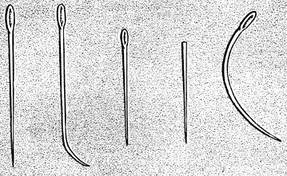
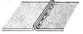
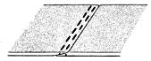
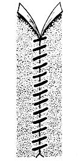
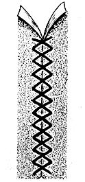
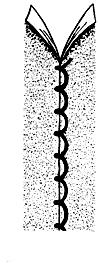
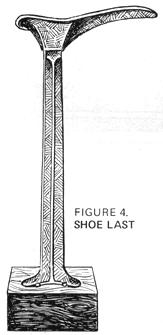
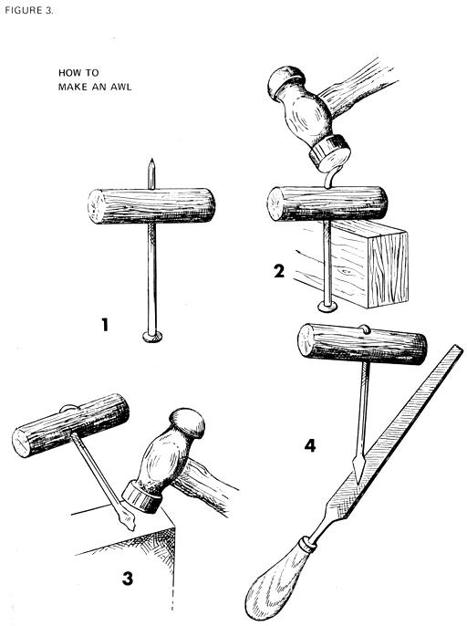

Survival Sewing
By Donald R. Blum
July/August 1971
by DONALD R. BLUM
HOW A MAN CAN REPAIR ALMOST ANYTHING PLIABLE WITH A 30 cents PACK OF FIVE NEEDLES
Possibly the greatest "tool" buy in the world today is an old-timey bargain package of five strange-looking needles. You can find this packet in most dime or drug stores-Singer calls the assortment their "5 hand sewing needles"-and it sells for just thirty cents.
These man-sized instruments (at 3 to 4 inches in length, they're twice the size of regular sewing needles) can make virtually anyone an expert in the repair and recycling of worn and discarded gloves, shoes, jackets, blankets, mats, belts, knapsacks, heavy pants and shirts.
The kit contains (according to Singer) a bookbinder's needle, packing needle, carpet needle, sailmakers needle and curved needle. Armed with this assortment and the proper thread, any man should be capable of repairing and recycling a good 90% or more of any damaged, worn or weatherbeaten leather and heavy fabric goods that he'll ever own.
You'll also find that trashmongering takes on another wonderful dimension once you've mastered these five needles. Suddenly, you're able to resew and reuse all those discarded leather and heavy fabric items-even odd gloves, shoes and boots-that you've been passing by.
Basic survival sewing, as I practice it, breaks down into three classifications: [I] Items in which a needle can make new holes (lighter leathers, fabrics, vinyls, etc.), [2] Items in which the needle uses holes already made (heavy fabrics, heavy leather and shoes) and [3] Items in which new holes are made with an awl (some fabrics, leathers and many types of shoe repair).
I. LIGHTWEIGHT SEWING
For years, I've used Coats & Clark's button and carpet extra strong thread for lightweight sewing. It's twice as strong and durable as the thread normally used to sew jeans, levis and most types of jackets.
Where seams have rotted away or threads become broken on the item being repaired, it's best to pick out and cut off the loose threads. If the fabric has rotted or broken at a seam, make a neat, square joint with scissors.
Of course, the needle you use and the type of repair seam you make depends on the fabric. Generally, I seem to end up making saddle seams and using a blanket (see Figure 1 for stitch and seam illustrations). Pick the needle that fits the job and always knot the ends of the thread together no matter what stitch you use . . . it makes a seam last twice as long.
Since you're making new holes in the fabric, you'll find it's safer and more comfortable to use a man-sized thimble or to wrap a piece of old belting around your thumb to help you push the needle through.
II. MEDIUM-WEIGHT SEWING
I don't know the lifespan of leather but it has to be 50 to 100 years or more. That's why, when you find discarded leather items, they've usually been thrown away because the stitching has rotted. In most cases, the original holes in the leather are still intact and you can make the item look virtually new just by directing your needle through them. Sometimes-when the leather in handbags, briefcases, belts and shoe seams is too thick and strong to force a needle through-the reuse of the original stitching holes is the only practical method of repair (see Figure 2 for example).
Incidentally, if you insist on trying to open new stitching holes in tough material by forcing a needle through, you'll only succeed-sooner or later-in snapping the needle and painfully skewering your hand. So stick with those original holes.
The same needles and thread used in lightweight stitching can be used for medium-weight sewing. There's a new polyester-cotton wrapped thread on the market, however, that adds another dimension of strength to medium-weight repair work. It's Dual Duty Plus, Extra Strong by J.P. Coats and I recommend it.
As a trashmongering by-product of medium weight stitching, you'll find you can resew old attache and briefcases you find, oil them with neatsfoot or castor oil and recycle/sell them to pawn shops, second-hand stores or-via classified ads-to individuals.
FIGURE 1.
TYPES OF SEAMS
For all practical purposes there are only three major types of seams found in garments and footwear.
TYPES OF STITCHES
It stands to reason you can't be too fancy when you're using a big needle and heavy thread. These four, basic, simple stitches are all you'll need.
III. HEAVYWEIGHT SEWING
To me, this classification of needle-and-thread repair primarily involves shoe soles and, if you're going to get this involved, you'll want a shoe last and an awl. You can make the awl yourself from a spike and hardwood dowel (see Figure 3) but you'll probably want to buy the shoe last (Figure 4). And that may not be easy.
Back in the 30's and 40's, shoe lasts were standard fixtures in many a home where the father regularly resoled and re-heeled footwear for the family . . . but lasts are not nearly so common today. Your best bet is to scrounge the secondhand stores where-if you're lucky-you can probably get one for a dollar. I've also seen a few in antique shops for $5 to $10 each.
In addition to making shoe repair a real delight, the shoe last serves the primary purpose of clinching nails which are driven through to the inside of a shoe from the bottom of a new sole or heel. There's really no substitute for a good shoe last, so get one if you can. And if you can't . . . well, you can always buy a pair of glue-on-rubber soles which, today, aren't half bad. I still prefer sewed-on leather half soles, however, and A STEP-BY-STEP METHOD FOR SEWING ON NEW LEATHER HALF-SOLES, with this article, outlines my method of applying them.
I'll admit that this introduction to the manly (and womanly) art of survival sewing is less than exhaustive, but I do believe it's complete enough to open your eyes to possibilities that you may not have realized existed. Perhaps now you know why I say that with a strong pair of hands, 30 cents worth of needles, 30 cents worth of thread and a little know-how . . . any man can become the recycle-sewing-talent of his commune or friendship circle.
HOW TO REPAIR A RIPPED SEAM IN BOOT OR SHOE UPPERS
1. PRY THE SEAM APART until you get some resistance. Stop there and pull all the old threads out. A penknife or razor helps.
2. PICK THE RIGHT NEEDLE AND THREAD. If you can get your hand behind the seam, you can use a straight needle. If the seam is near the toe of the shoe, you'll have to use the curved needle. Use a single strand of thread for a fine seam but, if the original needle holes are big enough, you may use two, three or four strands of thread. Your repaired seam will be more water-resistant if you coat the thread with beeswax from a beeswax candle or a chunk of shoemaker's beeswax. If you can't get beeswax, a regular candle or hunk of wax is better than nothing.
3. STITCH THE SEAM by simply following the old holes. Be careful not to make the holes any larger than they already are and pull the thread taut.
4. FINISH by sewing the last stitch two or three times. There's no need to use a knot to tie the thread. Then rub or pound the stitches into the leather for a smooth finish.
A STEP-BY-STEP METHOD FOR SEWING ON NEW LEATHER HALF-SOLES
1. Either buy precut half-soles or obtain a piece of shoe leather.
2. Soften the leather or half-sole in a pan of warm water for ten minutes. This makes it easier to cut and sew. After soaking, wrap the leather in old newspapers to blot up excess water.
3. If you're working with a piece of leather, trace around the old sole and cut with a sharp knife.
4. With the shoe on the last cut the threads on the old half-sole, raise the sole and separate with a slightly diagonal cut in the arch area.
5. Bevel the new half-sole to overlap what's left of the original sole.
6. Select a clinching shoe nail a half size longer than the combined thickness of the shoe and new sole.(Clinching nails run from 3/8" to 7/8" long.) Hammer about eight to ten nails across the joint where the bevels of the old sole and new half-sole meet. Tack down the tip and each side of the half-sole.
7. If you want a neat job, trim the edge of the new half-sole with a sharp knife.
8. Cut a slight depression or channel where the stitches are to go on the bottom of the new sole. This protects the stitches from being worn off.
9. Using the original holes in the shoe welt as a guide, make holes in the new sole from the topside. Every other hole is sufficient.
10. Get a waxed thread about 36 inches long and thread a needle on each end. Starting in the first hole nearest the arch, pass the needles through the same hole (one through one way and one through the other) and continue the opposing stitches completely around the sole. Tie a knot or repeat the last stitch three times at the end and cut off the excess thread.
11. Finish by pounding down the channel in the new sole. Rub beeswax or shoe polish into all cracks, needle holes and stitches.
BIBLIOGRAPHY
SHOE REPAIRING, Henry Karg, The Bruce Publishing Co., 1965.
REPAIRING FOOTWEAR, Maurice Morrill, Univ. of Vermont, 1946.
THE GOLDEN BOOK OF CRAFTS AND HOBBIES, W. Ben Hunt, , Golden Press, Inc., 1957.
|
 BOOKBINDERS,PACKING,CARPET,SAILMAKERS,CURVED |
BUTT SEAM: Two pieces of material meet head-on. |
 SADDLE SEAM: This vertical joint is stronger, more waterproof and lasts longer than a butt seam. |
|
 LAP SEAM: In fabric, two pieces of cloth merely overlap. For footwear, the overlapping pieces of leather are often tapered for a better-looking fit. |
STRAIGHT STITCH: Suitable only for lightweight fabrics, this stitch is fairly weak and not very permanent. |
 CROSSOVER STITCH: Simplest stitch of all and useful in any recycling sewing. |
|
 CROSS-STITCH: Good for light leather and virtually any fabric. Great holding strength. |
 BLANKET STITCH: Each stitch is ""locked"" by a semi-knot. Thus, the seam can break or come apart only one stitch at a time. An excellent stitch for any material |
 |
|
 |
 |
|